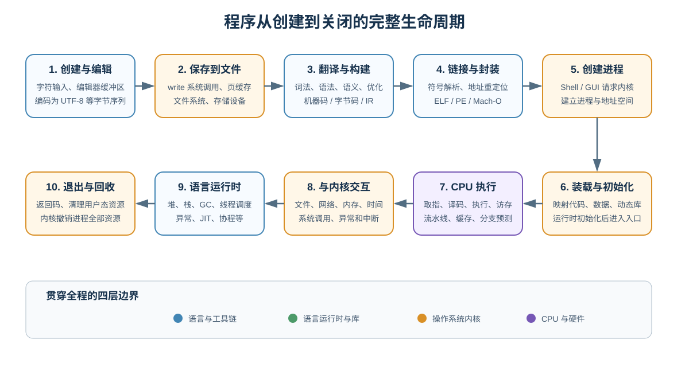
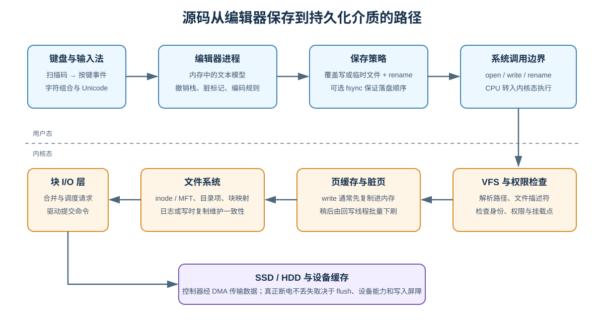
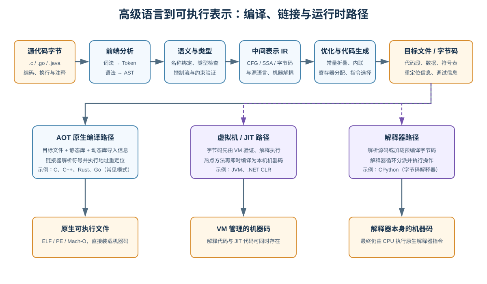
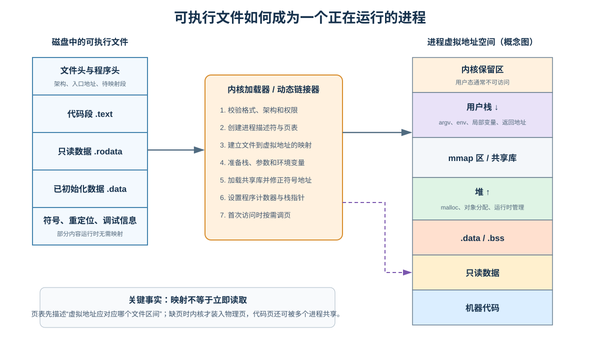
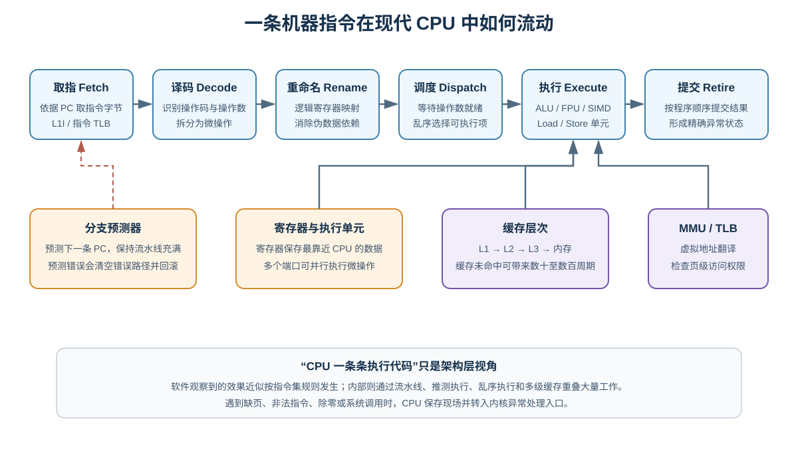
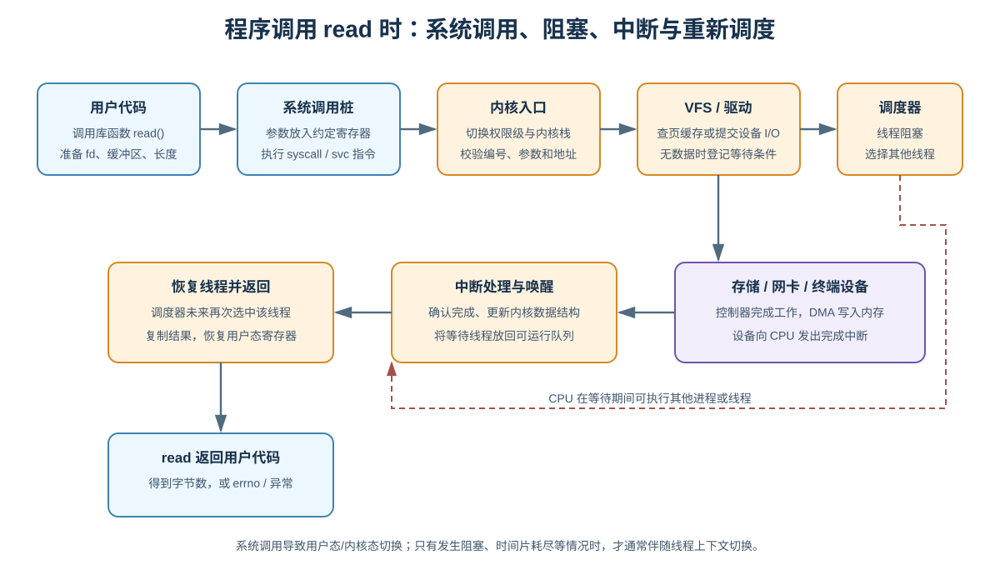
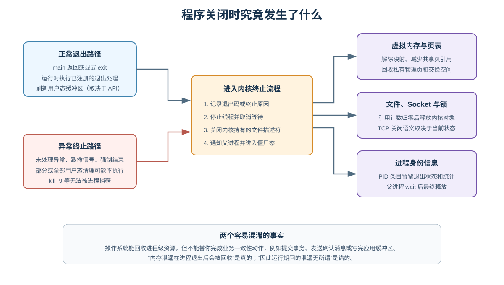

程序底层执行原理：从一行源码到进程退出
本文试图回答一个看似简单、实际横跨整个计算机系统的问题：我们创建一个源代码文件，按下保存和运行按钮之后，计算机究竟做了什么？
内容以现代 64 位计算机为背景，主要使用 C 程序说明原生编译路径，同时对比 Java/JVM 与 Python/CPython。Linux 中常见的 ELF、
fork、execve和 Windows 中常见的 PE、CreateProcess实现细节并不完全相同，但背后的抽象——文件、进程、虚拟内存、指令、系统调用和资源回收——高度一致。
1. 先建立全局心智模型
“程序”这个词在不同阶段指代不同对象：
| 阶段 | 程序以什么形式存在 | 位于哪里 |
|---|---|---|
| 编辑中 | 编辑器维护的字符、语法树、撤销记录 | 编辑器进程的内存 |
| 已保存 | 按字符编码排列的字节 | 文件系统与存储设备 |
| 编译中 | Token、AST、中间表示、目标代码 | 编译器进程的内存与临时文件 |
| 已构建 | 可执行文件、字节码、动态库 | 文件系统 |
| 已启动 | 进程、线程、虚拟地址空间、内核对象 | 内存与内核数据结构 |
| 执行中 | CPU 指令、寄存器状态、缓存行 | CPU、缓存与内存 |
| 已退出 | 退出码、统计信息，短暂保留的进程记录 | 内核；随后被回收 |
因此：
- 源代码不是 CPU 能直接理解的东西，它首先只是有特定编码的文件字节。
- 可执行文件不是进程，前者是静态文件，后者是操作系统管理的一次运行实例。
- 虚拟地址不是物理内存地址，CPU 和操作系统通过页表完成转换。
- 高级语言的一条语句通常不对应一条机器指令，可能被优化掉、展开成多条指令，或变成运行时函数调用。
- 不同语言的中间路径不同，但最后一定有机器码在 CPU 上执行。解释型语言只是由解释器的机器码读取并执行另一种表示。

可以把全过程划分为四层：
- 语言与工具链层：源代码、编译器、解释器、链接器、构建系统。
- 语言运行时与库层：标准库、堆分配器、垃圾回收器、虚拟机、协程调度器。
- 操作系统层：文件、进程、线程、虚拟内存、系统调用、设备驱动。
- 硬件层：CPU 指令集、寄存器、缓存、内存、SSD、网卡等。
定位问题时先判断它属于哪一层，往往比立即阅读业务代码更重要。
2. 创建源代码：从按键到编辑器内存
假设我们创建 hello.c：
#include <stdio.h>
int main(void) {
puts("Hello, world!");
return 0;
}
2.1 键盘输入不是直接产生字符
按下一个按键大致经历：
- 键盘控制器检测按键状态变化，产生硬件扫描码。
- USB 或其他总线将事件传给主机控制器。
- 设备通过中断通知 CPU，操作系统键盘驱动读取事件。
- 窗口系统把按键事件发送给当前获得焦点的编辑器。
- 输入法结合键盘布局、组合键和候选状态，将事件转换为 Unicode 字符。
- 编辑器把字符插入自己的文本模型，并重新执行语法高亮、诊断等增量计算。
物理按键、按键事件和字符不是一回事。例如同一个按键受 Shift、Caps Lock、键盘布局和输入法影响，可以产生不同字符。
2.2 编辑器中的文件首先是内存对象
编辑器一般不会在每次按键后直接改磁盘。它可能使用连续数组、piece table、rope 或 gap buffer 等数据结构维护文本，并额外保存：
- 光标与选区；
- 撤销/重做历史；
- 文件编码与换行格式；
- “内容已修改但未保存”的脏标记；
- 语言服务器返回的符号、诊断和补全信息。
此时突然断电，未保存内容通常会消失。某些编辑器的自动恢复功能，本质上是周期性地把恢复副本写入另一个文件，并不是内存天然持久化。
2.3 字符最终要编码成字节
内存中的抽象字符在写文件前必须按某种编码转换为字节。UTF-8 中：
| 字符 | Unicode 码点 | UTF-8 字节 |
|---|---|---|
A |
U+0041 | 41 |
中 |
U+4E2D | E4 B8 AD |
| 换行 | U+000A | 0A |
编码错误会发生在“字节如何解释为字符”这一边界。编译器实际读取的是字节，再按约定的源码编码解码。UTF-8 BOM、Windows 的 CRLF（0D 0A）与 Unix 的 LF（0A）也都是文件字节的一部分。
3. 保存源码：从用户态缓冲区到 SSD

3.1 保存按钮触发了什么
一种简化的保存过程是：
文本模型
→ 按 UTF-8 编码
→ open 打开文件
→ write 写入字节
→ close 关闭文件描述符
为了避免覆盖到一半崩溃造成原文件损坏，成熟编辑器常采用更稳健的原子替换策略：
写入同目录临时文件
→ 刷新临时文件
→ 保留权限等元数据
→ rename 原子替换目标文件
→ 必要时刷新父目录
实际策略会受到编辑器配置、文件系统和操作系统影响。原子 rename 保证观察者不会看到“半个文件”，但它不自动等价于断电后一定持久化。
3.2 write 返回不代表已经写进闪存
应用调用 write 时，CPU 从用户态切入内核态。内核通常先把数据复制或映射到页缓存，将相应页面标为脏页，然后就可以向应用返回成功。之后，内核回写线程再批量将脏页提交给文件系统和设备驱动。
这有三个重要后果：
- 第二次读取文件很可能直接命中内存页缓存，比 SSD 更快。
close通常不保证设备已经完成持久化。- 真正要求断电一致性时，需要正确使用
fsync/fdatasync、目录同步、写入屏障，并考虑设备自身缓存行为。
3.3 文件系统保存的不只是内容
文件系统还管理：
- 文件名到 inode（Linux 常见概念）或 MFT 记录（NTFS）的映射；
- 所有者、权限、时间戳和扩展属性；
- 文件逻辑偏移到物理块的映射；
- 空闲空间；
- 崩溃一致性日志或写时复制元数据。
文件名通常属于目录项，文件内容属于另一个对象。因此重命名往往只修改目录元数据，不需要搬运全部内容。
3.4 最终写入硬件
块 I/O 层合并和调度请求，驱动向存储控制器提交命令。控制器可通过 DMA 直接在设备与内存之间传输数据，CPU 不必逐字节搬运。完成后设备发送中断，内核更新请求状态并唤醒等待者。
对 SSD 而言，“写入某个文件偏移”还会经过闪存转换层：
- 逻辑块地址映射到实际 NAND 页；
- NAND 通常按页写、按块擦除；
- 控制器执行磨损均衡、垃圾回收和纠错；
- 因此文件系统看到的块地址并不等同于固定的物理闪存位置。
4. 从源码到可执行表示
保存的 hello.c 还只是文本。执行：
gcc -O2 -Wall -Wextra hello.c -o hello
会启动编译器驱动程序。驱动程序协调预处理器、编译器、汇编器和链接器；它本身也只是另一个正在运行的进程。

4.1 预处理：以 C 为例
C 预处理器处理：
#include：把头文件内容纳入当前翻译单元；#define：宏替换；#if：条件编译；- 删除注释并维护源码位置映射。
观察结果：
gcc -E hello.c -o hello.i
头文件通常只提供声明、宏和类型定义，不会因为 #include <stdio.h> 就把整个 C 标准库机器码复制进源码。
4.2 词法分析：字节流变成 Token
编译器前端将字符序列识别为 Token：
int main(void) { return 0; }
可被识别为：
关键字(int) 标识符(main) 左括号 关键字(void)
右括号 左花括号 关键字(return) 整数字面量(0) 分号 右花括号
空白和注释大多只用于分隔 Token 或保留源码位置信息。
4.3 语法分析：Token 变成 AST
解析器根据语言文法构建抽象语法树（AST）。它表达的是结构而不是排版。例如：
result = a + b * 2;
树结构会体现乘法优先于加法：
赋值
├── result
└── 加法
├── a
└── 乘法
├── b
└── 2
少括号、少分号等错误通常在这一阶段报告。
4.4 语义分析与类型检查
语法正确不代表程序有意义。编译器还要执行：
- 名称绑定：变量名到底指向哪个声明；
- 作用域检查：局部变量是否在可见范围内；
- 类型检查：操作数和返回值是否兼容；
- 重载解析、泛型实例化、访问控制；
- 构建控制流图并检查某些不可达路径。
“未声明变量”或“不能把字符串赋给整数”属于语义问题。
4.5 中间表示与优化
编译器通常不会直接从 AST 生成最终指令，而会转换为一种或多种 IR。常见 SSA（Static Single Assignment）形式要求每个变量版本只赋值一次，便于进行数据流分析。
典型优化包括：
- 常量折叠：
3 * 4在编译期变成12； - 死代码消除：删除永远不会产生可观察效果的代码；
- 公共子表达式消除：避免重复计算；
- 函数内联：用函数体替换调用；
- 循环展开与向量化；
- 逃逸分析：判断对象是否必须放到堆上；
- 寄存器分配：把高频数据放入有限的 CPU 寄存器。
优化必须保持语言规定的可观察行为，但调试时的语句顺序、变量位置可能与源码不再一一对应。
4.6 机器码生成与目标文件
后端针对具体指令集选择指令，例如 x86-64 或 AArch64，并生成目标文件：
gcc -c hello.c -o hello.o
目标文件通常包含：
.text：机器代码；.rodata：字符串字面量等只读数据；.data：已初始化的全局或静态变量；.bss：未显式初始化、运行时应清零的数据，只需记录大小；- 符号表：函数和全局对象的名字与属性；
- 重定位记录：尚不能确定的地址；
- 可选的调试信息。
4.7 链接：解决“名字最终在哪里”
hello.o 中调用了 puts，但它的实现不在当前目标文件。链接器负责：
- 合并多个目标文件的节；
- 解析符号定义与引用；
- 为代码和数据规划地址；
- 应用重定位；
- 引入静态库内容，或记录动态库依赖；
- 生成 ELF、PE 或 Mach-O 可执行文件。
静态链接把所需库代码复制进可执行文件，文件更大、部署更独立。
动态链接在运行时映射共享库，多个进程可共享只读代码页，也便于单独升级库，但会引入版本和搜索路径问题。
常见错误可按阶段区分：
| 错误 | 典型阶段 |
|---|---|
| 缺少分号、括号不匹配 | 语法分析 |
| 类型不兼容、名称未声明 | 语义分析 |
undefined reference / 未解析外部符号 |
链接 |
缺少 .so / .dll |
装载或动态链接 |
| 非法内存访问 | 运行期 |
5. 编译型、虚拟机型与解释型程序
“编译”和“解释”不是互斥的语言标签，而是实现策略。
5.1 AOT 原生编译
C、C++、Rust 和常见 Go 工具链主要提前生成目标平台机器码：
源码 → IR → 机器码 → 原生可执行文件 → 操作系统装载
优势是启动路径直接、运行时不必逐条解释；代价是产物与 CPU 架构、操作系统 ABI 相关。
5.2 字节码与虚拟机
Java 常见路径：
.java → javac → .class 字节码 → JVM 验证与解释 → 热点 JIT 编译 → 机器码
JVM 本身是原生程序。字节码具有平台无关性，JVM 负责把它映射到当前机器。JIT 可以利用真实运行数据做热点内联和推测优化，但也带来预热、代码缓存和去优化等机制。
5.3 解释器
以 CPython 为例：
.py → 解析 AST → 编译为 Python 字节码 → CPython 解释循环分派执行
当字节码表达“两个对象相加”时，解释器需要检查对象类型并调用对应实现。最终执行的仍是 CPython 解释器及扩展模块的机器指令。
因此，“Python 不编译”并不准确；它通常会编译到字节码，只是不会像 C 那样直接产生独立的原生机器码程序。
6. 点击运行：谁请求操作系统创建进程
运行程序的入口可以是：
- Shell 输入
./hello； - IDE 的运行/调试按钮；
- 桌面环境双击；
- Web 服务器启动工作进程；
- 容器运行时启动容器内进程；
- 操作系统服务管理器启动服务。
这些入口最终都要请求内核创建或替换进程映像。
6.1 Linux 的典型路径
Shell 常见行为是：
- 解析命令行、变量、重定向和管道。
- 通过
fork/clone创建子进程，或使用posix_spawn。 - 子进程设置文件描述符、工作目录、用户身份等。
- 调用
execve(path, argv, envp)，用新程序替换当前进程映像。 - 父 Shell 调用
wait等待前台任务，或把后台任务加入作业表。
execve 成功后不会返回原程序，因为原地址空间已经被新程序替换。PID 通常保持不变。
如果文件以 #! 开头，例如：
#!/usr/bin/env python3
内核会按规则启动指定解释器，并把脚本路径作为参数传入。此时真正被直接装载执行的是 Python 解释器。
6.2 Windows 的典型路径
Windows 常通过 CreateProcess 一次完成创建进程对象、初始线程、地址空间和映像装载。PE 加载器处理 DLL、导入表和重定位。接口形态与 Linux 不同，但仍要解决：
- 找到并验证可执行文件；
- 创建内核进程与线程对象；
- 建立虚拟地址空间；
- 映射映像及动态库；
- 准备参数、环境与句柄；
- 让初始线程从启动入口运行。
6.3 权限与安全检查
内核不会无条件执行任意文件。它会考虑：
- 当前用户是否有执行或读取权限；
- 文件系统是否以
noexec等选项挂载； - 文件格式、目标架构是否支持；
- 代码签名、安全策略、应用控制；
- Linux capabilities、SELinux/AppArmor，或 Windows 访问令牌与完整性级别；
- 容器命名空间、seccomp 和 cgroup 限制。
7. 装载：文件如何变成虚拟地址空间

7.1 读取文件头
加载器先读取 ELF/PE/Mach-O 文件头，获得：
- 文件格式与位数；
- 目标 CPU 架构；
- 程序入口虚拟地址；
- 哪些文件区间要映射到哪些虚拟地址；
- 每个映射的读、写、执行权限；
- 动态链接器和依赖信息。
装载主要关注“段”（segment），链接和调试工具更多关注“节”（section）。二者有关联但不是完全相同的概念。
7.2 建立映射，不等于一次性读入全部文件
内核创建页表项，描述某段虚拟地址对应可执行文件的哪个区间。第一次真正访问某页时可能产生缺页异常，内核再：
- 判断访问是否合法；
- 在页缓存中查找该文件页；
- 必要时从存储设备读取；
- 分配或复用物理页；
- 更新页表；
- 恢复导致缺页的指令。
这称为按需调页。大型程序可以快速启动，因为从未触及的代码页不必加载。
7.3 典型虚拟地址空间
一个进程常包含：
- 代码区：通常可读、可执行，不可写；
- 只读数据区：字符串和常量；
.data/.bss：全局、静态数据；- 堆：动态分配对象，增长方式由分配器和系统决定；
mmap区：共享库、映射文件、大块匿名内存；- 每线程栈：局部变量、返回地址、保存的寄存器；
- 内核保留区域。
具体地址和排列受操作系统、链接方式与 ASLR 影响，不能依赖示意图中的固定顺序。
7.4 页表、MMU 与 TLB
程序发出的地址是虚拟地址。CPU 的 MMU 根据当前进程页表转换为物理地址，并检查页权限。转换结果会缓存在 TLB 中：
虚拟地址 = 虚拟页号 + 页内偏移
虚拟页号 --页表/TLB--> 物理页框号
物理地址 = 物理页框号 + 页内偏移
页表让每个进程看起来都拥有独立连续内存，并实现：
- 进程隔离；
- 只读、可写、可执行权限；
- 共享库代码页共享；
- 写时复制；
- 文件映射；
- 换页与按需分配。
7.5 动态链接与重定位
动态链接器映射所需共享库，解析导入符号，并把调用点关联到最终地址。为了支持 ASLR 和位置无关代码，实际装载基址可能每次不同。
有些符号采用懒绑定：第一次调用时才解析，减少启动工作；也可以启用立即绑定，提前暴露缺失符号并强化某些安全属性。
8. 从入口点到 main
可执行文件入口通常不是源码中的 main。内核把控制权交给启动代码后，启动流程大致为：
- 读取内核放在初始栈上的
argc、argv、环境变量和辅助向量。 - 完成动态链接器初始化。
- 初始化线程局部存储、运行时和标准库。
- 执行全局构造器、模块初始化或包初始化。
- 调用用户的
main。 main返回后，把返回值交给退出流程。
不同生态还会做更多工作：
| 运行时 | 进入用户代码前的典型工作 |
|---|---|
| C/C++ | C 运行库初始化、构造全局对象 |
| Go | 初始化 runtime、GC、调度器，创建主 goroutine |
| JVM | 初始化 JVM、堆、GC、类加载器，定位主类 |
| CPython | 初始化解释器、模块系统、内存管理器，编译/加载字节码 |
“Hello World 启动慢”可能不是那一行输出慢，而是运行时初始化、动态库装载、类加载或安全检查占据了主要时间。
9. 进程、线程与调度
9.1 进程是资源容器
操作系统为进程维护的典型信息包括：
- PID、父子关系和生命周期状态；
- 虚拟地址空间与页表；
- 打开的文件描述符或句柄；
- 凭据、权限、命名空间；
- 信号处理方式；
- 一个或多个线程；
- CPU 时间、内存等资源统计。
9.2 线程是 CPU 调度实体
线程通常拥有：
- 程序计数器；
- 通用寄存器和状态寄存器；
- 独立用户栈与内核栈；
- 线程局部存储；
- 调度状态和优先级。
同一进程的线程共享代码、全局数据、堆和打开的文件，因此通信便宜，也容易产生数据竞争。
9.3 上下文切换
当时间片用完、线程阻塞或更高优先级任务就绪时，调度器可能：
- 保存当前线程的寄存器和执行位置；
- 更新线程状态；
- 选择另一个可运行线程；
- 切换地址空间（如果跨进程）和内核栈；
- 恢复目标线程寄存器；
- 返回用户态继续执行。
上下文切换不仅有保存寄存器的直接成本，还可能扰动 CPU 缓存、TLB 和分支预测状态。
语言级协程不一定对应内核线程。Go goroutine、异步任务等可由用户态运行时调度到少量系统线程上。
10. CPU 如何执行机器指令

10.1 指令集是软硬件契约
x86-64、AArch64 等 ISA 规定：
- 指令编码；
- 寄存器集合；
- 数据类型和寻址方式；
- 异常与权限模型；
- 软件可观察到的执行语义。
编译器按 ISA 生成机器码，CPU 实现该 ISA。相同 x86-64 程序能在不同厂商 CPU 上运行，是因为它们遵守共同契约，而内部微架构可以不同。
10.2 经典的取指、译码、执行
从架构视角，一条指令经历：
- 取指：根据程序计数器 PC 取得指令字节。
- 译码：识别操作码、寄存器和立即数。
- 取操作数：从寄存器或内存获得数据。
- 执行：算术逻辑单元、浮点单元或访存单元工作。
- 写回：结果进入寄存器或内存。
- 更新 PC：继续下一条或跳转目标。
10.3 现代 CPU 实际更复杂
为了提高吞吐量，现代 CPU 使用：
- 多级流水线；
- 超标量并行发射；
- 分支预测和推测执行；
- 寄存器重命名；
- 乱序执行；
- 按程序顺序提交；
- L1/L2/L3 多级缓存；
- 硬件预取。
一条较早指令等待内存时，后面没有依赖的指令可以先执行。但 CPU 在提交阶段维持 ISA 要求的可观察结果，并在分支预测错误或异常时回滚错误路径。
10.4 性能经常受数据移动限制
粗略理解访问成本：
寄存器 < L1 缓存 < L2 缓存 < L3 缓存 < 主内存 < SSD < 网络
具体延迟随硬件变化，不应死记固定数字。真正重要的是数量级差异。连续访问数组通常比随机追逐指针更利于缓存行和硬件预取。
11. 函数调用与栈帧
调用函数不只是“跳到另一段代码”。调用约定规定参数、返回值和寄存器如何传递。
概念上：
调用者：
准备参数
保存约定要求保存的寄存器
写入返回地址并跳转
被调用者：
建立栈帧
保存需要保存的寄存器
为局部变量预留空间
执行函数体
恢复现场并返回
在 64 位平台上，前几个参数通常优先通过寄存器传递，更多参数或特定对象才放到栈上。返回值也常放在约定寄存器中。
典型栈帧可能包含：
- 返回地址；
- 旧帧指针；
- 保存的寄存器；
- 无法放入寄存器的局部变量；
- 临时值；
- 传给其他函数的栈参数。
但优化器可能内联函数、消除栈帧，或让局部变量始终留在寄存器中。所以“每次函数调用必定创建源码可见的完整栈帧”并不总成立。
栈溢出通常来自过深递归、过大的栈上对象或受限线程栈。某些语言运行时使用可增长栈或分段栈，但最终仍必须管理调用现场。
12. 变量和对象放在哪里
“局部变量在栈、对象在堆”只是入门近似，不是语言定律。
12.1 寄存器
活跃且适合的值会被编译器放进寄存器。源码变量甚至可能没有固定内存地址。
12.2 栈
栈分配通常只需移动栈指针，释放随函数返回自然发生，成本低且局部性好。但对象不能在其栈帧失效后继续被引用。
12.3 堆
生命周期跨越函数、大小动态或被共享的对象常在堆上。分配器通常从较大的内存区域切出对象，并按大小分类管理。申请堆对象不一定每次都直接触发系统调用。
12.4 静态存储区
全局变量、静态变量的存储期通常覆盖进程生命周期，放在 .data、.bss 或相关区域。
12.5 回收方式
| 方式 | 常见语言 | 特点 |
|---|---|---|
| 显式释放 | C | 可控，但易泄漏、重复释放、悬空引用 |
| RAII / 所有权 | C++ / Rust | 生命周期与作用域或所有权规则结合 |
| 垃圾回收 | Java / Go / C# | 自动识别不可达对象，有运行时成本 |
| 引用计数 + 循环 GC | CPython | 多数对象及时回收，循环引用另行处理 |
GC 只管理语言运行时知道的内存对象，文件、Socket、数据库事务等外部资源仍应显式关闭。
13. 程序如何访问文件、网络和屏幕
普通用户程序不能随意操作磁盘控制器、页表或网卡寄存器。它通过系统调用请求内核服务。
13.1 从库函数到系统调用
源码中的：
puts("Hello, world!");
可能经历：
puts
→ C 标准库管理 stdout 缓冲区
→ write 系统调用封装
→ 特权切换进入内核
→ 内核根据文件描述符找到终端或管道
→ 驱动/终端子系统处理字节
库函数不等于系统调用。库函数可以完全在用户态完成，也可以调用一个或多个系统调用。
13.2 系统调用的权限切换
系统调用桩通常：
- 按 ABI 将系统调用号和参数放入寄存器；
- 执行
syscall、svc等特殊指令； - CPU 切换到更高权限级和内核入口；
- 内核校验参数，尤其是用户指针；
- 执行服务并返回结果；
- CPU 恢复用户态。
系统调用边界是安全边界。内核不能信任用户传入的地址和长度，否则一个进程可能读取内核或其他进程内存。
13.3 系统调用不等于上下文切换
系统调用必然涉及用户态/内核态转换，但如果请求立即完成，可以返回同一线程，不必换成另一个线程。只有阻塞、抢占等情况下才发生调度意义上的上下文切换。

13.4 阻塞 I/O
如果 read 等待网络数据：
- 内核登记该线程等待的 Socket 事件；
- 把线程标记为睡眠；
- 调度其他可运行线程；
- 网卡收到数据，通过 DMA 放入内存并触发中断；
- 协议栈处理数据并唤醒等待线程；
- 线程重新获得 CPU 后，
read返回。
异步 I/O、epoll、IOCP、io_uring 等机制改变了等待和通知模型，但硬件完成、内核处理与用户态消费的基本层次仍存在。
14. 异常、中断和信号
这三个概念容易混淆：
| 机制 | 来源 | 是否与当前指令同步 | 示例 |
|---|---|---|---|
| 异常 | CPU 执行当前指令 | 通常同步 | 缺页、除零、非法指令 |
| 硬件中断 | 外部设备或定时器 | 异步 | 网卡收包、时钟中断 |
| 信号（Unix） | 内核抽象 | 对进程异步投递 | SIGTERM、SIGSEGV |
缺页不一定是错误。按需调页和写时复制都会故意利用缺页异常。内核能修复时，处理后重试原指令；非法地址无法修复时，才向进程报告访问违规或信号。
语言异常又是更高层机制。Java throw、Python raise 通常由语言运行时展开调用栈、寻找处理器，不等同于硬件异常；不过栈溢出、空指针陷阱等场景可能与操作系统异常机制结合。
15. 并发程序为何更复杂
多个线程共享内存时，源码中的一行操作未必是不可分割的。例如 count++ 概念上包含读取、加一、写回。两个线程交错执行会丢失更新。
15.1 原子性、可见性与有序性
- 原子性：操作是否不可被观察为中间状态。
- 可见性：一个核心的写入何时被另一个核心看到。
- 有序性：编译器和 CPU 是否允许重排操作。
锁、原子指令、内存屏障和语言内存模型共同建立 happens-before 关系。仅使用 volatile 在多数语言里不能自动解决所有复合并发问题。
15.2 缓存一致性不等于没有数据竞争
多核 CPU 的缓存一致性协议会让各核心最终对缓存行达成一致，但它不保证多个高级语言操作组成事务，也不替程序定义正确的同步顺序。
15.3 伪共享
两个线程修改逻辑上无关、物理上位于同一缓存行的数据，会导致缓存行在核心间频繁转移。程序没有锁竞争，仍可能因缓存一致性流量而变慢。
16. 程序如何退出
程序退出有多种路径：
main正常返回；- 调用
exit； - 未处理语言异常；
- 收到终止信号；
- 非法指令或不可恢复的内存错误；
- 被操作系统、管理员或资源限制强制结束；
- 机器断电或内核崩溃。

16.1 正常退出
以常见 C 运行时为例，main 返回大致等价于把返回值交给 exit。运行时可能：
- 调用
atexit注册的处理函数； - 执行语言规定的终结逻辑；
- 刷新并关闭 C 标准 I/O 流；
- 调用内核退出系统调用。
不同语言中 finally、defer、析构函数和 shutdown hook 的语义不同，不能笼统认为“退出时一定执行所有清理代码”。
16.2 强制终止
未处理崩溃或强制杀死可能绕过用户态清理。尤其 Unix SIGKILL 无法被捕获、屏蔽或处理。此时：
- 未刷新的应用缓冲区可能丢失；
- 数据库事务通常由连接断开机制回滚，但需依赖数据库保证；
- 业务级“发送完成消息”不会由操作系统代做；
- 临时文件和外部租约可能残留。
因此关键业务状态需要事务、幂等、日志和超时租约，而不能只依赖退出回调。
16.3 内核回收什么
不论正常还是异常终止，内核通常会：
- 停止进程内线程；
- 解除虚拟内存映射并回收私有页；
- 关闭文件描述符或句柄；
- 释放 Socket、管道和多数内核对象引用；
- 记录退出码和资源统计；
- 通知父进程。
Unix 中已退出进程可能短暂成为僵尸进程。僵尸不再执行，也没有原来的地址空间，只保留 PID、退出状态和统计信息，等待父进程 wait 回收。
16.4 退出码
退出码是程序与调用者之间的最小结果协议：
./hello
echo $?
通常 0 表示成功，非零表示某类失败，但具体含义由程序定义。Shell、CI、服务管理器会根据退出码判断后续行为。
17. 用一个小程序串起完整链路
考虑：
#include <stdio.h>
#include <stdlib.h>
int main(int argc, char **argv) {
const char *name = argc > 1 ? argv[1] : "world";
char *buffer = malloc(128);
if (buffer == NULL) {
return 1;
}
int length = snprintf(buffer, 128, "Hello, %s!\n", name);
if (length > 0) {
fwrite(buffer, 1, (size_t)length, stdout);
}
free(buffer);
return 0;
}
执行：
gcc -O2 demo.c -o demo
./demo Alice
完整链路可以概括为：
- 编辑器把字符保存在自身内存中。
- 保存时，字符编码为字节，经系统调用进入页缓存并最终写入存储设备。
- Shell 启动 GCC；GCC 读取源码，完成分析、优化、汇编和链接。
- 链接器生成包含入口、代码、数据和动态库依赖的可执行文件。
- Shell 创建子进程并请求内核执行
demo，传入argv = {"./demo", "Alice"}。 - 内核校验文件，建立虚拟地址空间，映射程序和动态链接器。
- 动态链接器映射 C 标准库并解析
malloc、snprintf、fwrite、free等符号。 - 启动代码初始化运行库，然后调用
main。 argv位于初始进程栈关联的数据中，name指向参数字符串。malloc从用户态分配器获得 128 字节；必要时分配器通过brk/mmap等向内核申请更多虚拟内存。snprintf在用户缓冲区格式化字节；这一步通常不需要系统调用。fwrite先处理 C 库缓冲，最终通过write将字节交给终端、管道或重定向文件。free把内存归还分配器；分配器不一定立即归还操作系统。main返回 0，运行时刷新输出并进入内核退出流程。- 内核释放进程资源，把退出状态交给等待的 Shell。
这也解释了为什么同一程序：
./demo Alice
./demo Alice > output.txt
./demo Alice | another_program
无需修改源码就能把输出送到终端、普通文件或管道。Shell 在程序启动前改变了标准输出文件描述符指向的内核对象，程序仍只看到 stdout。
18. 如何亲自观察底层过程
下面的命令应在隔离测试环境中执行；工具名称和参数随平台、版本变化。
18.1 查看文件与字节
# 查看文件类型、架构和动态链接信息
file ./demo
# 十六进制查看源码或二进制
xxd demo.c | head
# 查看文件元数据
stat demo.c
Windows 可使用 PowerShell：
Format-Hex .\demo.c
Get-Item .\demo.c | Format-List *
18.2 查看编译中间结果
gcc -E demo.c -o demo.i # 预处理结果
gcc -S -O2 demo.c -o demo.s # 汇编文本
gcc -c -O2 demo.c -o demo.o # 目标文件
18.3 查看可执行文件
readelf -h -l -S ./demo # ELF 头、段和节
readelf -d ./demo # 动态链接信息
nm -C ./demo # 符号
objdump -d -Mintel ./demo # 反汇编
ldd ./demo # 运行时共享库依赖
对不可信二进制不要随意执行 ldd；优先使用只解析文件的工具或在隔离环境分析。Windows 可使用 Visual Studio 工具链中的 dumpbin /headers、dumpbin /imports。
18.4 查看系统调用与进程
strace -f -o trace.log ./demo Alice
ps -ef
cat /proc/<PID>/maps
cat /proc/<PID>/status
lsof -p <PID>
strace 会改变时序，不能直接拿其运行耗时代表生产性能。Windows 可用 Process Explorer、Process Monitor、WinDbg 或 ETW 观察对应信息。
18.5 查看调度与硬件性能
perf stat ./demo Alice
perf record -g ./demo Alice
perf report
可关注：
- 指令数与 CPU 周期；
- IPC；
- 分支与分支预测失败；
- 缓存引用与缓存未命中；
- 缺页；
- 上下文切换。
性能数据必须在接近真实负载的环境中重复测量，单次结果很容易受到缓存预热、频率调节和后台任务影响。
19. 常见误区
误区 1：保存成功就是已经写入 SSD
保存通常先成功写入内核页缓存。要求抗断电持久化时，需要更强的同步和一致性协议。
误区 2：可执行文件被完整复制进内存后才开始运行
现代系统通常通过内存映射和按需调页，只在访问时装入需要的页。
误区 3：解释型语言不经过编译，CPU 能理解源码
解释器可能先把源码编译成字节码；CPU 执行的是解释器或 JIT 生成的机器码。
误区 4：一个源码语句对应一条 CPU 指令
优化可删除、合并、重排或展开操作。机器指令与源码通常是多对多关系。
误区 5：系统调用一定产生线程上下文切换
它一定产生权限级转换，但请求立即完成时，不一定切换到其他线程。
误区 6：局部变量必定在栈上
变量可能位于寄存器、栈、堆，甚至被优化掉。具体由语言语义和编译器决定。
误区 7：释放内存就一定立即归还操作系统
free 或 GC 常先归还给用户态分配器，供进程后续复用。是否退还内核取决于分配器和内存区域。
误区 8：进程退出会自动完成所有清理
内核会回收进程资源，但不能保证应用缓冲区、业务事务和远程状态完成收尾。
20. 从底层视角排查问题
遇到问题时可以按生命周期提问：
源码与保存阶段
- 文件实际编码和换行符是什么？
- 编辑器保存的是目标文件还是临时副本？
- 权限、剩余磁盘空间、挂载模式是否允许写入？
- 数据只进入页缓存，还是已满足持久化要求？
构建阶段
- 错误发生在预处理、语法、类型、代码生成还是链接？
- 编译目标架构、ABI 和运行环境是否一致？
- 优化级别、宏、依赖版本是否可复现？
- 动态库依赖和符号版本是否正确？
启动阶段
- 谁启动程序，传入了什么参数、环境变量、工作目录和权限？
- 可执行格式与 CPU 架构是否兼容？
- 动态库搜索路径和加载策略是什么？
- 启动慢是 I/O、缺页、运行时初始化还是安全检查造成？
运行阶段
- 问题属于 CPU、内存、磁盘、网络还是锁等待？
- 是用户态热点、系统调用过多，还是频繁上下文切换？
- 是否存在页错误、缓存未命中、GC 暂停或分配压力？
- 多线程代码是否建立了明确的同步关系？
退出阶段
- 是正常返回、未处理异常、信号还是强制终止？
- 退出码和日志是否保留了根因？
- 哪些清理依赖用户态代码，哪些由内核保证？
- 父进程是否正确等待子进程，是否产生僵尸进程？
21. 总结
一份程序从诞生到消失，穿过的是一条连续链路：
按键事件
→ 编辑器内存中的字符
→ 编码后的文件字节
→ 页缓存、文件系统与存储设备
→ Token、AST、IR、机器码或字节码
→ 可执行文件与动态库
→ 进程、线程和虚拟地址空间
→ CPU 指令、寄存器、缓存和内存
→ 系统调用、驱动、中断与外部设备
→ 退出状态与操作系统资源回收
高级语言、编译器、运行时和操作系统共同把硬件复杂性封装成开发者可使用的抽象。真正理解程序执行，不是抛弃这些抽象，而是知道每层抽象解决了什么问题、边界在哪里，以及出现性能、正确性和安全问题时如何向下一层验证。